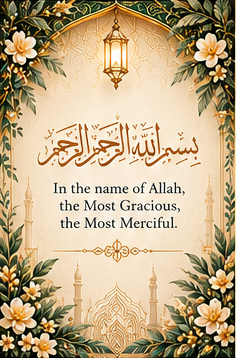
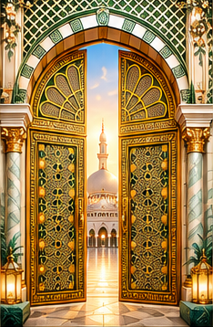
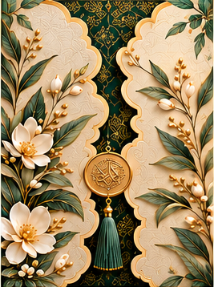

Tap the wrapper to open
All 16 panels are individually extracted at their original resolution. Artwork is contained in the viewing area without stretching or cropping; navigation and labels sit outside the artwork.
This package is for reviewing extraction and opening motion. Small storyboard crops are not final high-resolution masters. The CSS interior and vector birds are motion studies, not approved replacement artwork.
The 16-panel viewer preserves the storyboard exactly, including its unresolved wording, palette, phone numbers and printed QR. These are reference content: RSVP, Maps and security passes are not operational.
The separate approved dress-code JPEG and all five original photographs are included unchanged. Two gallery photos and the original Serena image are missing.
Confirm programme names/times and provide high-resolution artwork before production. No backend, valid guest passes or live deployment has been created.